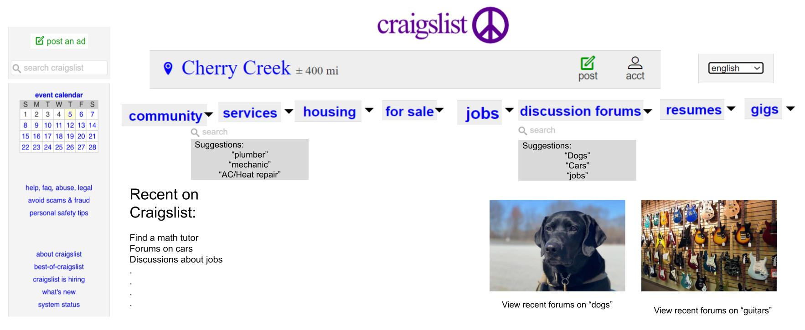
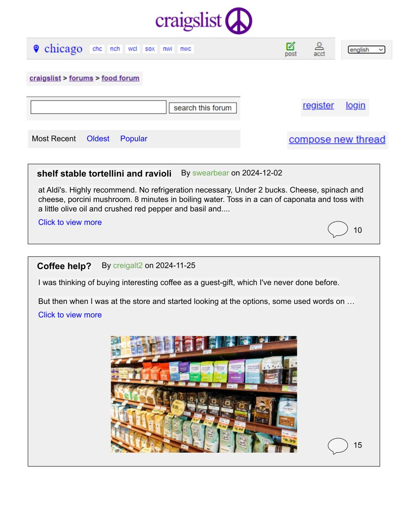

Proposed Solution
We worked on making the homepage more user friendly by breaking down topics in general categories. We also added images for recent forums.
The drop down menu will further display a search bar and suggestions. When the user clicks on a certain category, they will be redirected to that category/service's page which will have all the topics Craigslist already shows on their homepage.
This aims to alleviate the issue of crammyness and simplifies user experience.
 Click on Homepage or Forums Page to view the drawing as Google Drawing.